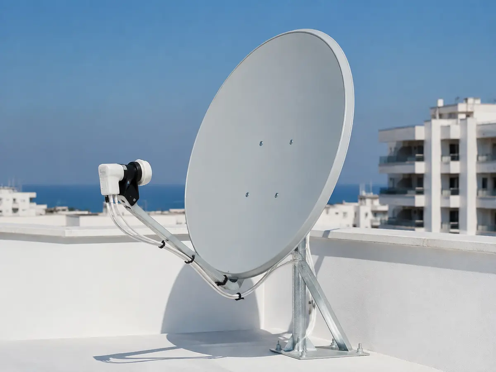
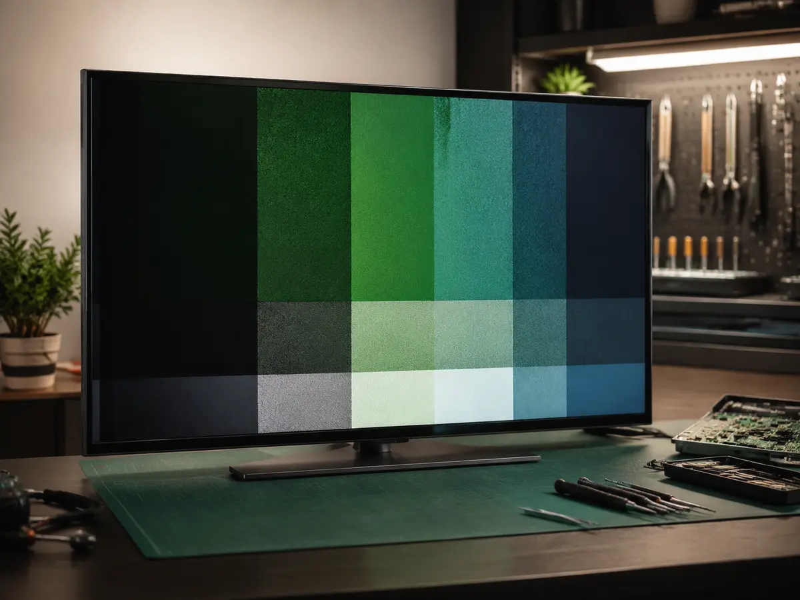
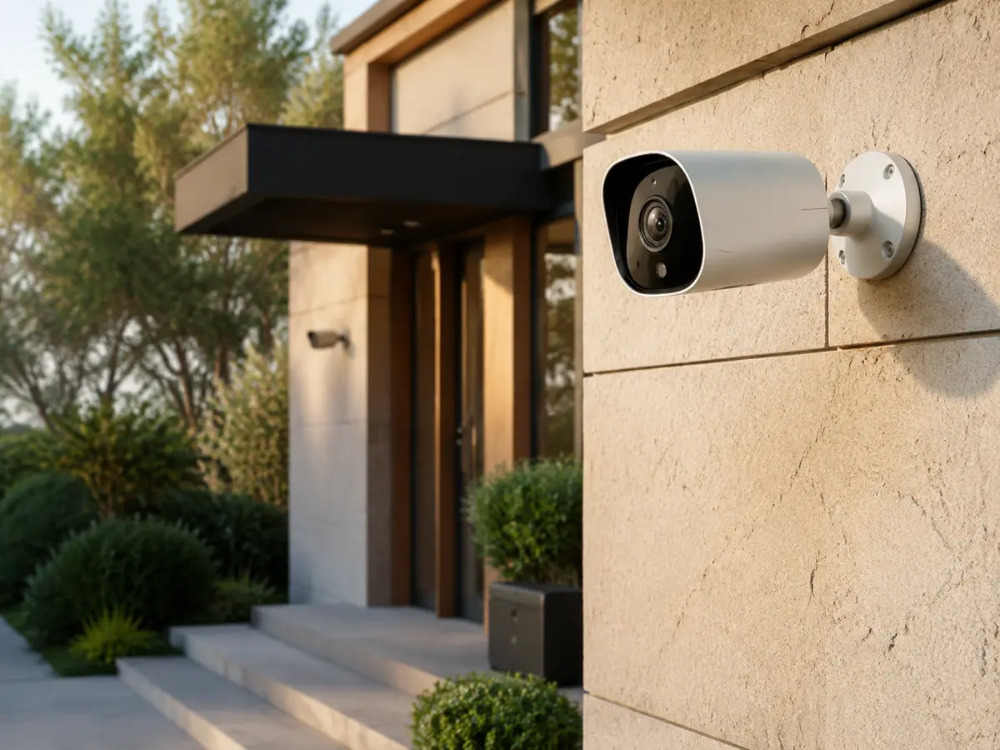

01Uydu servisi
Sinyal, çanak, LNB ve merkezi sistem sorunları.
Uydu servisini incele →MERSİN · TOROSLAR · YERİNDE SERVİS
Erdal Usta; Toroslar, Akdeniz, Yenişehir ve Mezitli’de arızayı dinler, uygun servis planını açıkça anlatır ve adresinize gelir.

01Sinyal, çanak, LNB ve merkezi sistem sorunları.
Uydu servisini incele →
02Görüntü, ses ve açılmama arızaları.
Televizyon tamirini incele →
03Ev ve işletmeler için planlı kurulum.
Kamera sistemlerini incele →NELERİ KONTROL EDİYORUZ?
Önce belirtinin kaynağını ayırır, yapılacak işlemi anlaşılır biçimde açıklarız.
01Uydu sinyali yok veya kanallar eksik
02Televizyonda ses var, görüntü yok
03Ev ve iş yeri kamera kurulumu
AYRINTILI BİLGİ
İbin Elektronik; uydu ve çanak anten, televizyon arızaları ve güvenlik kamerası ihtiyaçlarını ayrı uzmanlık başlıklarında ele alır. Ziyaretçi hangi sorunla karşılaşırsa karşılaşsın doğrudan Erdal Usta’ya ulaşır. Aracı çağrı merkezi veya doğrulanmamış fiyat vaadi kullanılmaz.
Servis planlaması Toroslar merkezli yapılır. Öncelikli alan Toroslar, Akdeniz, Yenişehir ve Mezitli’dir. Konum, arızanın türü ve mevcut yoğunluk telefonda değerlendirilerek uygun zaman belirlenir. 7 gün 24 saat talep bırakılabilir; bu ifade her talebe anında varış garantisi anlamına gelmez.
Sitedeki arıza rehberleri, kullanıcının tehlikeli müdahaleye girişmeden temel belirtileri ayırmasına yardımcı olur. Elektrik, çatı ve dış cephe riski bulunan işlemlerde açık güvenlik uyarısı verilir. Amaç gereksiz anahtar kelime tekrarı değil, doğru hizmet sayfasını doğru arama niyetiyle eşleştirmektir.
NASIL İLERLİYORUZ?
Cihaz ve belirti hakkında kısa bilgi verin.
Konum ve servis zamanı netleşsin.
İşlem kapsamı açıkça anlatılsın.
Elektrikli cihazların kapağını açmayın; çatı ve dış cephede kişisel müdahalede bulunmayın. Güvenli değilse cihazı kullanmayı bırakıp destek isteyin.
NEDEN İBİN ELEKTRONİK?
Servis talebiniz aracı bir çağrı merkezine aktarılmaz. Belirtiyi, cihazı ve adresi doğrudan işi değerlendirecek ustaya anlatırsınız.
Uydu, kamera ve uygun televizyon arızalarında ihtiyaç müşterinin adresinde değerlendirilir. İşlem kapsamı kontrol sonrasında açıkça konuşulur.
Olmayan yetkili servis belgesi, sahte müşteri yorumu, uydurma puan veya kesin fiyat vaadi kullanılmaz. İşletme bilgileri her sayfada aynı tutulur.

ERDAL USTA HAKKINDA
İbin Elektronik, Erdal Usta ile Toroslar merkezli yerel özel teknik servis olarak çalışır. Uydu yayını, televizyon arızası veya kamera kurulumu ihtiyacınızı telefonla anlatarak ön bilgi alabilirsiniz. Marka yetkili servisi iddiasında bulunulmaz.
İbin Elektronik hakkında ayrıntılı bilgi →GERÇEK İŞLER GALERİSİ
Uydu, televizyon ve kamera hizmetleri için kullanılan temsili kurumsal görseller. Gerçek iş fotoğrafları geldikçe bu galeri güncellenecektir.
ADRES VE SERVİS ALANI
Selçuklar Mahallesi, Çiftçiler Caddesi, 33250 Toroslar/Mersin adresinden Toroslar, Akdeniz, Yenişehir ve Mezitli için servis planlaması yapılır.
Google Haritalar’da yol tarifi alın →SIKÇA SORULAN SORULAR
Haftanın 7 günü, 24 saat telefon veya WhatsApp üzerinden talep bırakabilirsiniz.
Belirtiye göre ön bilgi verilir; kesin işlem ve parça ihtiyacı kontrol sonrası netleşir.